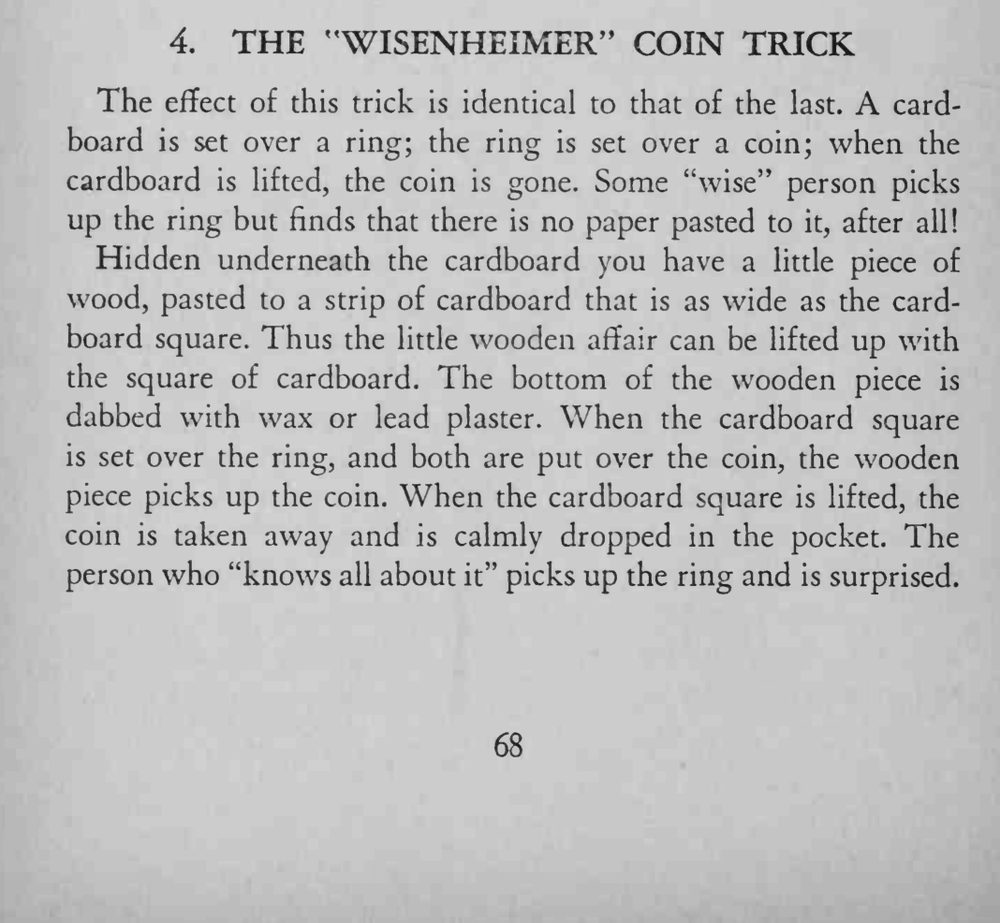

纸板一盖一掀，硬币又消失了；但自称懂行的人拿起戒指检查，却发现戒指底下根本没有粘纸片。
木头底面要够粘又不留痕；掀纸板时保持水平，别让硬币晃动出声。

The effect of this trick is identical to that of the last. A cardboard is set over a ring; the ring is set over a coin; when the cardboard is lifted, the coin is gone. Some "wise" person picks up the ring but finds that there is no paper pasted to it, after all! Hidden underneath the cardboard you have a little piece of wood, pasted to a strip of cardboard that is as wide as the cardboard square. Thus the little wooden affair can be lifted up with the square of cardboard. The bottom of the wooden piece is dabbed with wax or lead plaster. When the cardboard square is set over the ring, and both are put over the coin, the wooden piece picks up the coin. When the cardboard square is lifted, the coin is taken away and is calmly dropped in the pocket. The person who "knows all about it" picks up the ring and is surprised.